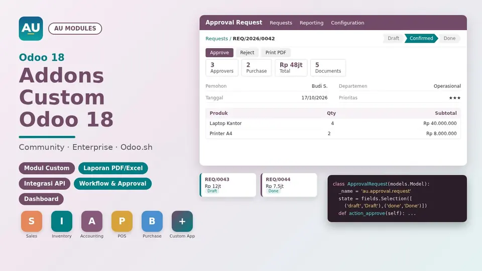

Jasa
Jasa Pembuatan Addons & Modul Custom Odoo 18 (Community/Enterprise)
Modul Odoo 18 sesuai alur bisnis Anda: fitur baru, alur approval, penomoran, laporan PDF/Excel, dashboard, integrasi API atau marketplace, sampai migrasi modul lama.
Mulai Rp1.500.000
Lihat detail